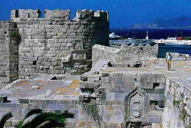

Μεσαιωνικές οχυρώσεις στην Κω
 Οι Ιωαννίτες της Ρόδου κατέλαβαν την Κω γύρω στο 1337 και επισκεύασαν το αρχαίο φρούριο της πόλης. Το μεσαιωνικό τείχος της Κω περιέκλειε την περιοχή του λιμανιού και της αρχαίας αγοράς και ενισχύονταν με δύο πύργους στη νοτιοανατολική και νοτιοδυτική γωνία. Το Κάστρο των Ιπποτών χωριζόταν από την πόλη με τάφρο, η οποία επιχωματώθηκε στις αρχές του 20ού αι. Για την κατασκευή του εξωτερικού του τείχους αναφέρεται ότι χρησιμοποιήθηκαν σε μεγάλη έκταση κατάλοιπα του Ασκληπιείου που βρίσκεται λίγα χιλιόμετρα νότια της πόλης. | ||